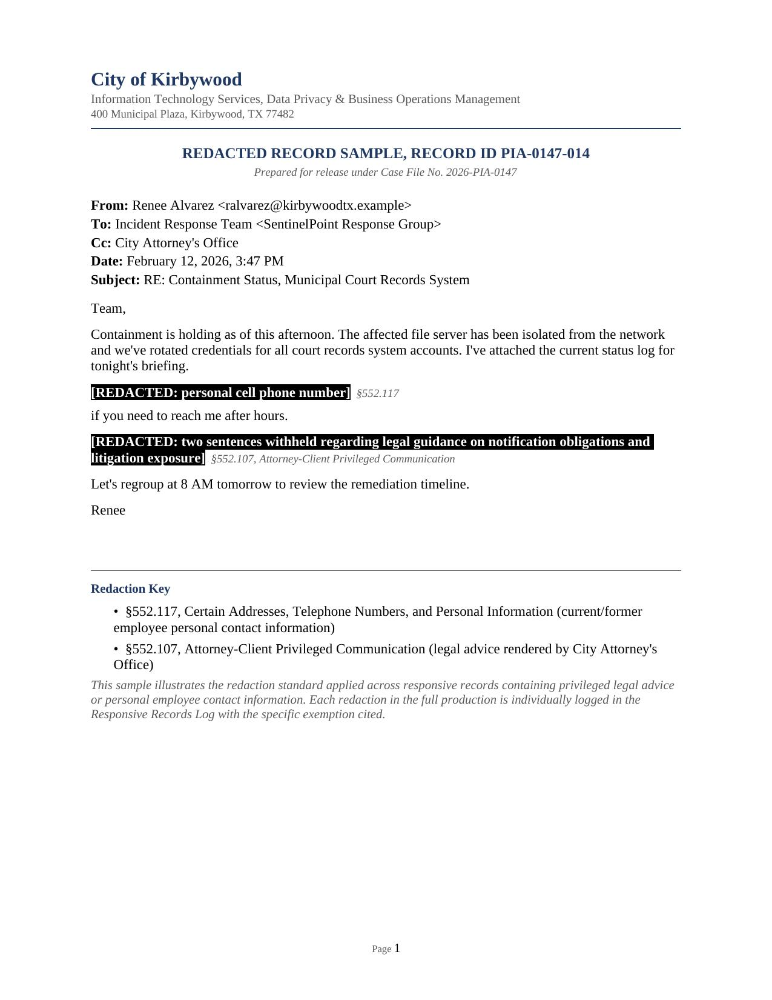
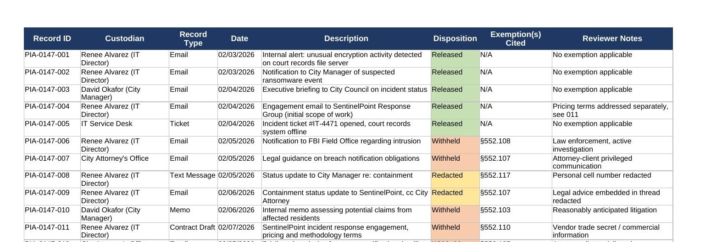

A ransomware incident affected a municipal court records system. A week later, a local reporter filed a formal Texas Public Information Act (TPIA) request for every email, text message, and memo the IT Director and City Manager exchanged about the incident, including all communications with the incident-response vendor and law enforcement.
Log and route the request, identify the right custodians, coordinate exemption review with the City Attorney's Office, prepare the formal escalation to the Texas Attorney General for any disputed withholdings, and respond to the requester, all inside the statutory deadline.
What actually has to be searched, and by whom? Which of these records are genuinely exempt under Chapter 552 versus just uncomfortable to release? And what happens procedurally when the City and the requester disagree about that?
The instinct on a record like privileged legal correspondence is to withhold it outright because it feels sensitive. The statute doesn't work that way. Each of the 31 responsive records had to be tested against a specific exemption (attorney-client privilege, active law enforcement investigation, vendor trade secret, and so on), not a general sense of discomfort. That distinction is what separates a defensible disposition log from one that collapses under an Attorney General review.
| Type | Indicator | Context |
|---|---|---|
| §552.103 | Reasonably anticipated litigation | Applied to records tied to potential City liability |
| §552.107 | Attorney-client privileged communication | Applied to legal advice from the City Attorney's Office |
| §552.108 | Active law enforcement investigation | Applied to records shared with the FBI |
| §552.110 | Vendor trade secret / commercial information | Applied to the IR vendor's proprietary methodology |
| §552.117 | Employee personal contact information | Applied to personal phone numbers in released records |
Hypothetical scenario: the City of Kirbywood, all named individuals, and every record described are a fictional mockup built to model a realistic municipal compliance workflow. The legal framework (Texas Gov't Code Ch. 552) and process are real and verified against the current statute.


Mockup documents built for this simulated scenario; no real individuals or agency records are depicted.
| # | Artifact | What It Shows | |
|---|---|---|---|
| 01 | Incoming TPIA Request | The trigger document: a realistic, formal TPIA request | .docx |
| 02 | Intake & Routing Memo | Statutory deadline tracking, custodian identification | .docx |
| 03 | Search & Collection Methodology Memo | Defensible, documented collection process | .docx |
| 04 | Responsive Records Log | 31-record disposition tracker with exemption codes | .xlsx |
| 05 | Redacted Sample Record | Applied redaction standard with legal citations | .docx |
| 06 | OAG Ruling Request Letter | Formal escalation when withholding is disputed | .docx |
| 07 | Final Response Letter | Closing communication and appeal-rights notice | .docx |
All seven artifacts are downloadable above (Word / Excel). This case simulates a Staff Analyst (Data Privacy & Compliance) / Public Information Officer / eDiscovery Analyst role, the compliance-facing side of incident response that complements the technical DFIR cases elsewhere in this portfolio.
"Is this record actually privileged, or just something the City would rather not release?"
The content of each record measured against the specific statutory exemption language, not a general impression of sensitivity, cross-checked against who authored it, who it was sent to, and what it was created for.
The reflex on anything that touched legal strategy or the ongoing FBI involvement was to default to withholding broadly, since releasing the wrong thing carries real liability.
Applying the actual exemption tests one record at a time showed that several records read as sensitive on their face but didn't meet any specific statutory exemption, so those had to be released. Over-withholding is its own liability under the Act, not a safe default.
A defensible disposition log is built exemption-by-exemption and record-by-record, not by a blanket judgment call about what feels releasable. That discipline is what holds up if the Attorney General's office reviews the file.